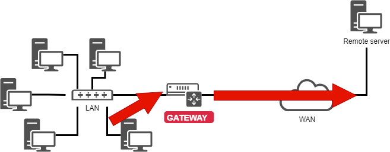

Implementing the Network
In this chapter you will learn how to work with and manage the network.
Objectives : In this chapter you will learn how to:
:heavy_check_mark: Configure a workstation to use DHCP;
:heavy_check_mark: Configure a workstation to use a static configuration;
:heavy_check_mark: Configure a workstation to use a gateway;
:heavy_check_mark: Configure a workstation to use DNS servers;
:heavy_check_mark: Troubleshoot the network of a workstation.
:checkered_flag: network, linux, ip
Knowledge: :star: :star:
Complexity: :star: :star:
Reading time: 30 minutes
Generalities
To illustrate this chapter, we will use the following architecture.

It will allow us to consider :
- integration in a LAN (local area network);
- the configuration of a gateway to reach a remote server;
- the configuration of a DNS server and the implementation of name resolution.
The minimum parameters to be defined for the machine are:
- the name of the machine ;
- the IP address;
- the subnet mask.
Example:
pc-rocky;192.168.1.10;255.255.255.0.
The notation called CIDR is more and more frequent: 192.168.1.10/24
IP addresses are used for the proper routing of messages (packets). They are divided into two parts:
- the fixed part, identifying the network;
- the identifier of the host in the network.
The subnet mask is a set of 4 bytes intended to isolate:
- the network address (NetID or SubnetID) by performing a bitwise logical AND between the IP address and the mask;
- the host address (HostID) by performing a bitwise logical AND between the IP address and the complement of the mask.
There are also specific addresses within a network, which must be identified. The first address of a range as well as the last one have a particular role:
-
The first address of a range is the network address. It is used to identify networks and to route information from one network to another.
-
The last address of a range is the broadcast address. It is used to broadcast information to all the machines on the network.
MAC address / IP address
A MAC address is a physical identifier written in the factory onto the device. This is sometimes referred to as the hardware address. It consists of 6 bytes often given in hexadecimal form (for example 5E:FF:56:A2:AF:15). It is composed of : 3 bytes of the manufacturer identifier and 3 bytes of the serial number.
!!! Warning
This last statement is nowadays a little less true with virtualization. There are also software solutions for changing the MAC address.
An Internet Protocol (IP) address is an identification number permanently or temporarily assigned to each device connected to a computer network using the Internet Protocol. One part defines the network address (NetID or SubnetID as the case may be), the other part defines the address of the host in the network (HostID). The relative size of each part varies according to the network (sub)mask.
An IPv4 address defines an address on 4 bytes. The number of available addresses being close to saturation a new standard was created, the IPv6 defined on 16 bytes.
IPv6 is often represented by 8 groups of 2 bytes separated by a colon. Insignificant zeros can be omitted, one or more groups of 4 consecutive zeros can be replaced by a double colon.
Subnet masks have from 0 to 128 bits. (for example 21ac:0000:0000:0611:21e0:00ba:321b:54da/64 or 21ac::611:21e0:ba:321b:54da/64)
In a web address or URL (Uniform Resource Locator), an ip address can be followed by a colon and the port address (which indicates the application to which the data is destined). Also to avoid confusion in a URL, the IPv6 address is written in square brackets [ ], colon, port address.
IP and MAC addresses must be unique on a network!
DNS Domain
Client machines can be part of a DNS (Domain Name System, e.g. mydomain.lan) domain.
The fully qualified machine name (FQDN) becomes pc-rocky.mydomain.lan.
A set of computers can be grouped into a logical, name-resolving, set called a DNS domain. A DNS domain is not, of course, limited to a single physical network.
In order for a computer to be part of a DNS domain, it must be given a DNS suffix (here mydomain.lan) as well as servers that it can query.
Reminder of the OSI model
!!! Note "Memory aid"
To remember the order of the layers of the OSI model, remember the following sentence: __Please Do Not Touch Steven's Pet Alligator__.
| Layer | Protocoles |
|---|---|
| 7 - Application | POP, IMAP, SMTP, SSH, SNMP, HTTP, FTP, ... |
| 6 - Presentation | ASCII, MIME, ... |
| 5 - Session | TLS, SSL, NetBIOS, ... |
| 4 - Transport | TLS, SSL, TCP, UDP, ... |
| 3 - Network | IPv4, IPv6, ARP, ... |
| 2 - Data Link | Ethernet, WiFi, Token Ring, ... |
| 1 - Physical | Cables, optical fibers, radio waves, ... |
Layer 1 (Physical) supports transmission over a communication channel (Wifi, Optical fiber, RJ cable, etc.). Unit: the bit.
Layer 2 (Data Link) supports network topology (token-ring, star, bus, etc.), data splitting and transmission errors. Unit: the frame.
Layer 3 (Network) supports end-to-end data transmission (IP routing = Gateway). Unit: the packet.
Layer 4 (Transport) supports service type (connected or unconnected) encryption and flow control. Unit: the segment or the datagram.
Layer 5 (Session) supports the communication between two computers.
Layer 6 (Presentation) represents the area that is independent of data at the application layer. Essentially this layer translates from network format to the application format, or or from the application format to the network format.
Layer 7 (Application) represents the contact with the user. It provides the services offered by the network: http, dns, ftp, imap, pop, smtp, etc.
The naming of interfaces
lo is the "loopback" interface which allows TCP/IP programs to communicate with each other without leaving the local machine. This enables testing if the network module of the system is working properly and also allows pinging the localhost. All packets that enter through localhost leave through localhost. The packets received are the packets sent.
The Linux kernel assigns interface names with a specific prefix depending on the type. Traditionally, all Ethernet interfaces, for example, began with eth. The prefix was followed by a number, the first being 0 (eth0, eth1, eth2...). The wifi interfaces were given a wlan prefix.
On Rocky8 Linux distributions, systemd will name interfaces with the new following policy where "X" represents a number:
enoX: on-board devicesensX: PCI Express hotplug slotenpXsX: physical/geographical location of the connector of the hardware- ...
Using the ip command
Forget the old ifconfig command! Think ip!
!!! Note
Comment for administrators of older Linux systems:
The historical network management command is `ifconfig`. This command has been replaced by the `ip` command, which is already well known to network administrators.
The `ip` command is the only command to manage **IP address, ARP, routing, etc.**.
The `ifconfig` command is no longer installed by default in Rocky8.
It is important to get into good habits now.
The hostname
The hostname command displays or sets the host name of the system
hostname [-f] [hostname]
| Option | Description |
|---|---|
-f |
Display the FQDN |
-i |
Display the system IPs address |
!!! Tip
This command is used by various network programs to identify the machine.
To assign a host name, it is possible to use the hostname command, but the changes will not be retained at the next boot. The command with no arguments displays the host name.
To set the host name, the file /etc/sysconfig/network must be modified:
NETWORKING=yes
HOSTNAME=pc-rocky.mondomaine.lan
The RedHat boot script also consults the /etc/hosts file to resolve the host name of the system.
When the system boots, Linux evaluates the HOSTNAME value in the /etc/sysconfig/network file.
It then uses the /etc/hosts file to evaluate the main IP address of the server and its host name. It deduces the DNS domain name.
It is therefore essential to fill in these two files before any configuration of network services.
!!! Tip
To know if this configuration is well done, the commands `hostname` and `hostname -f` must answer with the expected values.
/etc/hosts file
The /etc/hosts file is a static host name mapping table, which follows the following format:
@IP <hostname> [alias] [# comment]
Example of /etc/hosts file:
127.0.0.1 localhost localhost.localdomain
::1 localhost localhost.localdomain
192.168.1.10 rockstar.rockylinux.lan rockstar
The /etc/hosts file is still used by the system, especially at boot time when the system FQDN is determined.
!!! Tip
RedHat recommends that at least one line containing the system name be filled in.
If the DNS service (Ddomain Name Service) is not in place, you must fill in all the names in the hosts file for each of your machines.
The /etc/hosts file contains one line per entry, with the IP address, the FQDN, then the host name (in that order) and a series of aliases (alias1 alias2 ...). The alias is an option.
/etc/nsswitch.conf file
The NSS (Name Service Switch) allows configuration files (e.g. /etc/passwd, /etc/group, /etc/hosts) to be substituted for one or more centralized databases.
The /etc/nsswitch.conf file is used to configure the name service databases.
passwd: files
shadow: files
group: files
hosts: files dns
In this case, Linux will first look for a host name match (hosts: line) in the /etc/hosts file (files value) before querying DNS (dns value)! This behavior can simply be changed by editing the /etc/nsswitch.conf file.
Of course, it is possible to imagine querying an LDAP, MySQL or other server by configuring the name service to respond to system requests for hosts, users, groups, etc.
The resolution of the name service can be tested with the getent command that we will see later in this course.
/etc/resolv.conf file
The /etc/resolv.conf file contains the DNS name resolution configuration.
#Generated by NetworkManager
domain mondomaine.lan
search mondomaine.lan
nameserver 192.168.1.254
!!! Tip
This file is historical. It is no longer filled in directly!
Newer generations of distributions have generally integrated the NetworkManager service. This service allows you to manage the configuration more efficiently, either in graphical or console mode.
It allows for the addition of DNS servers from the configuration file of a network interface. It then dynamically populates the /etc/resolv.conf file which should never be edited directly, otherwise the configuration changes will be lost the next time the network service is started.
ip command
The ip command from the iproute2 package allows you to configure an interface and its routing table.
Display interfaces :
[root]# ip link
Display interfaces information:
[root]# ip addr show
Display the information of an interface :
[root]# ip addr show eth0
Display the ARP table:
[root]# ip neigh
All historical network management commands have been grouped under the ip command, which is well known to network administrators.
DHCP configuration
The DHCP protocol (Dynamic Host CControl Protocol) allows you to obtain a complete IP configuration via the network. This is the default configuration mode of a network interface under Rocky Linux, which explains why a system connected to the network of an Internet router can function without additional configuration.
The configuration of interfaces under Rocky Linux is done in the /etc/sysconfig/network-scripts/ folder.
For each Ethernet interface, a ifcfg-ethX file allows for the configuration of the associated interface.
DEVICE=eth0
ONBOOT=yes
BOOTPROTO=dhcp
HWADDR=00:0c:29:96:32:e3
- Interface name : (must be in the file name)
DEVICE=eth0
- Automatically start the interface:
ONBOOT=yes
- Make a DHCP request when the interface starts up:
BOOTPROTO=dhcp
- Specify the MAC address (optional but useful when there are several interfaces) :
HWADDR=00:0c:29:96:32:e3
!!! Tip
If NetworkManager is installed, the changes are taken into account automatically. If not, you have to restart the network service.
- Restart the network service:
[root]# systemctl restart NetworkManager
Static configuration
The static configuration requires at least:
DEVICE=eth0
ONBOOT=yes
BOOTPROTO=none
IPADDR=192.168.1.10
NETMASK=255.255.255.0
- Here we are replacing "dhcp" with "none" which equals static configuration:
BOOTPROTO=none
- IP Address:
IPADDR=192.168.1.10
- Subnet mask:
NETMASK=255.255.255.0
- The mask can be specified with a prefix:
PREFIX=24
!!! Warning
You must use NETMASK OR PREFIX - Not both!
Routing

DEVICE=eth0
ONBOOT=yes
BOOTPROTO=none
HWADDR=00:0c:29:96:32:e3
IPADDR=192.168.1.10
NETMASK=255.255.255.0
GATEWAY=192.168.1.254
The ip route command:
[root]# ip route show
192.168.1.0/24 dev eth0 […] src 192.168.1.10 metric 1
default via 192.168.1.254 dev eth0 proto static
It is a good idea to know how to read a routing table, especially in an environment with multiple network interfaces.
-
In the example shown, the
192.168.1.0/24network is reachable directly from theeth0device, so there is a metric at1(does not traverse a router). -
All other networks than the previous one will be reachable, again from the
eth0device, but this time the packets will be addressed to a192.168.1.254gateway. The routing protocol is a static protocol (although it is possible to add a route to a dynamically assigned address in Linux).
Name resolution
A system needs to resolve:
- FQDNs into IP addresses
www.free.fr = 212.27.48.10
- IP addresses into names
212.27.48.10 = www.free.fr
- or to obtain information about an area:
MX de free.fr = 10 mx1.free.fr + 20 mx2.free.fr
DEVICE=eth0
ONBOOT=yes
BOOTPROTO=none
HWADDR=00:0c:29:96:32:e3
IPADDR=192.168.1.10
NETMASK=255.255.255.0
GATEWAY=192.168.1.254
DNS1=172.16.1.2
DNS2=172.16.1.3
DOMAIN=rockylinux.lan
In this case, to reach the DNS, you have to go through the gateway.
#Generated by NetworkManager
domain mondomaine.lan
search mondomaine.lan
nameserver 172.16.1.2
nameserver 172.16.1.3
The file has been updated by NetworkManager.
Troubleshooting
The ping command sends datagrams to another machine and waits for a response.
It is the basic command for testing the network because it checks the connectivity between your network interface and another.
Syntax of the ping command:
ping [-c numerical] destination
The -c (count) option allows you to stop the command after the countdown in seconds.
Example:
[root]# ping –c 4 localhost
!!! Tip
Validate connectivity from near to far
1) Validate the TCP/IP software layer
[root]# ping localhost
"Pinging" the inner loop does not detect a hardware failure on the network interface. It simply determines whether the IP software configuration is correct.
2) Validate the network card
[root]# ping 192.168.1.10
To determine that the network card is functional, we must now ping its IP address. The network card, if the network cable is not connected, should be in a "down" state.
If the ping does not work, first check the network cable to your network switch and reassemble the interface (see the if up command), then check the interface itself.
3) Validate the connectivity of the gateway
[root]# ping 192.168.1.254
4) Validate the connectivity of a remote server
[root]# ping 172.16.1.2
5) Validate the DNS service
[root]# ping www.free.fr
dig command
The dig command is used to query the DNS server.
The dig command syntax:
dig [-t type] [+short] [name]
Examples:
[root]# dig +short rockylinux.org
76.223.126.88
[root]# dig -t MX +short rockylinux.org ✔
5 alt1.aspmx.l.google.com.
...
The dig command is used to query DNS servers. It is very verbose by default, but this behavior can be changed with the +short option.
It is also possible to specify a DNS record type to resolve, such as an MX type to get information about the mail exchangers for a domain.
getent command
The getent (get entry) command is used to get an NSSwitch entry (hosts + dns)
Syntax of the getent command:
getent hosts name
Example:
[root]# getent hosts rockylinux.org
76.223.126.88 rockylinux.org
Querying only a DNS server may return an erroneous result that does not take into account the contents of a hosts file, although this should be rare nowadays.
To take the /etc/hosts file into account as well, the NSSwitch name service must be queried, which will take care of any DNS resolution.
ipcalc command
The ipcalc (ip calculation) command is used to calculate the address of a network or broadcast from an IP address and a mask.
Syntax of the ipcalc command:
ipcalc [options] IP <netmask>
Example:
[root]# ipcalc –b 172.16.66.203 255.255.240.0
BROADCAST=172.16.79.255
!!! Tip
This command is interesting followed by a redirection to automatically fill in the configuration files of your interfaces:
```
[root]# ipcalc –b 172.16.66.203 255.255.240.0 >> /etc/sysconfig/network-scripts/ifcfg-eth0
```
| Option | Description |
|---|---|
-b |
Displays the broadcast address. |
-n |
Displays the network address and mask. |
ipcalc is a simple way to calculate the IP information of a host. The various options indicate what information ipcalc should display on the standard output. Multiple options can be specified. An IP address on which to operate must be specified. Most operations also require a network mask or CIDR prefix.
| Option short | Option long | Description |
|---|---|---|
-b |
--broadcast |
Displays the broadcast address of the given IP address and the network mask. |
-h |
--hostname |
Displays the hostname of the IP address given via DNS. |
-n |
--netmask |
Calculates the network mask for the given IP address. Assumes that the IP address is part of a complete class A, B, or C network. Many networks do not use default network masks, in which case an incorrect incorrect value will be returned. |
-p |
--prefix |
Indicates the prefix of the mask/IP address. |
-n |
--network |
Indicates the network address of the given IP address and mask. |
-s |
--silent |
Never displays any error messages. |
ss command
The ss (socket statistics) command displays the listening ports on the network.
Syntax of the ss command:
ss [-tuna]
Example:
[root]# ss –tuna
tcp LISTEN 0 128 *:22 *:*
The commands ss and netstat (to follow) will be very important for the rest of your Linux life.
When implementing network services, it is very common to check with one of these two commands that the service is listening on the expected ports.
netstat command
!!! Warning
The `netstat` command is now deprecated and is no-longer installed by default on Rocky Linux. You may still find some Linux versions that have it installed, but it is best to move on to using `ss` for everything that you would have used `netstat` for.
The netstat command (network statistics) displays the listening ports on the network.
Syntax of the netstat command:
netstat -tapn
Example:
[root]# netstat –tapn
tcp 0 0 0.0.0.0:22 0.0.0.0:* LISTEN 2161/sshd
IP or MAC address conflicts
A misconfiguration can cause multiple interfaces to use the same IP address. This can happen when a network has multiple DHCP servers or when the same IP address is manually assigned multiple times.
When the network is malfunctioning, and when an IP address conflict could be the cause, it is possible to use the arp-scan software (requires the EPEL repository):
$ dnf install arp-scan
Example:
$ arp-scan -I eth0 -l
172.16.1.104 00:01:02:03:04:05 3COM CORPORATION
172.16.1.107 00:0c:29:1b:eb:97 VMware, Inc.
172.16.1.250 00:26:ab:b1:b7:f6 (Unknown)
172.16.1.252 00:50:56:a9:6a:ed VMWare, Inc.
172.16.1.253 00:50:56:b6:78:ec VMWare, Inc.
172.16.1.253 00:50:56:b6:78:ec VMWare, Inc. (DUP: 2)
172.16.1.253 00:50:56:b6:78:ec VMWare, Inc. (DUP: 3)
172.16.1.253 00:50:56:b6:78:ec VMWare, Inc. (DUP: 4)
172.16.1.232 88:51:fb:5e:fa:b3 (Unknown) (DUP: 2)
!!! Tip
As the above example shows, it is also possible to have MAC address conflicts! These problems are brought about by virtualization technologies and the copying of virtual machines.
Hot configuration
The ip command can hot add an IP address to an interface
ip addr add @IP dev DEVICE
Example:
[root]# ip addr add 192.168.2.10 dev eth1
The ip command allows for the activation or deactivation of an interface:
ip link set DEVICE up
ip link set DEVICE down
Example:
[root]# ip link set eth1 up
[root]# ip link set eth1 down
The ip command is used to add a route:
ip route add [default|netaddr] via @IP [dev device]
Example:
[root]# ip route add default via 192.168.1.254
[root]# ip route add 192.168.100.0/24 via 192.168.2.254 dev eth1
In summary
The files used in this chapter are :

A complete interface configuration could be this (file /etc/sysconfig/network-scripts/ifcfg-eth0):
DEVICE=eth0
ONBOOT=yes
BOOTPROTO=none
HWADDR=00:0c:29:96:32:e3
IPADDR=192.168.1.10
NETMASK=255.255.255.0
GATEWAY=192.168.1.254
DNS1=172.16.1.1
DNS2=172.16.1.2
DOMAIN=rockylinux.lan
The troubleshooting method should go from closest to farthest:
- ping localhost (software test)
- ping IP-address (hardware test)
- ping gateway (connectivity test)
- ping remote-server (routing test)
- DNS query (dig or ping)